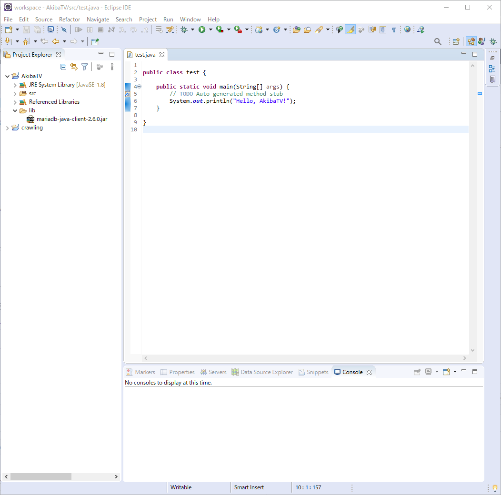
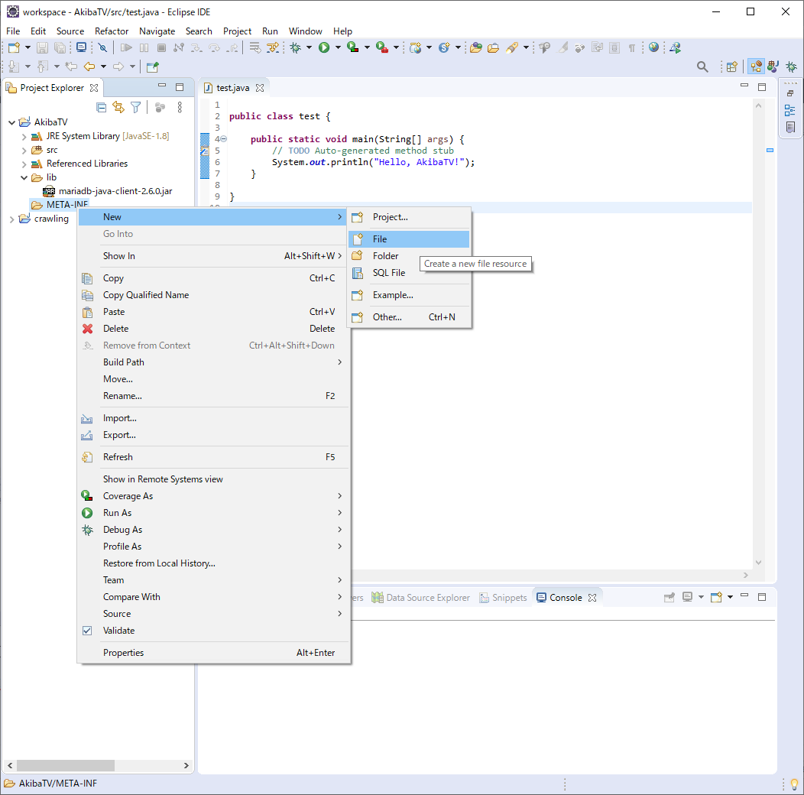
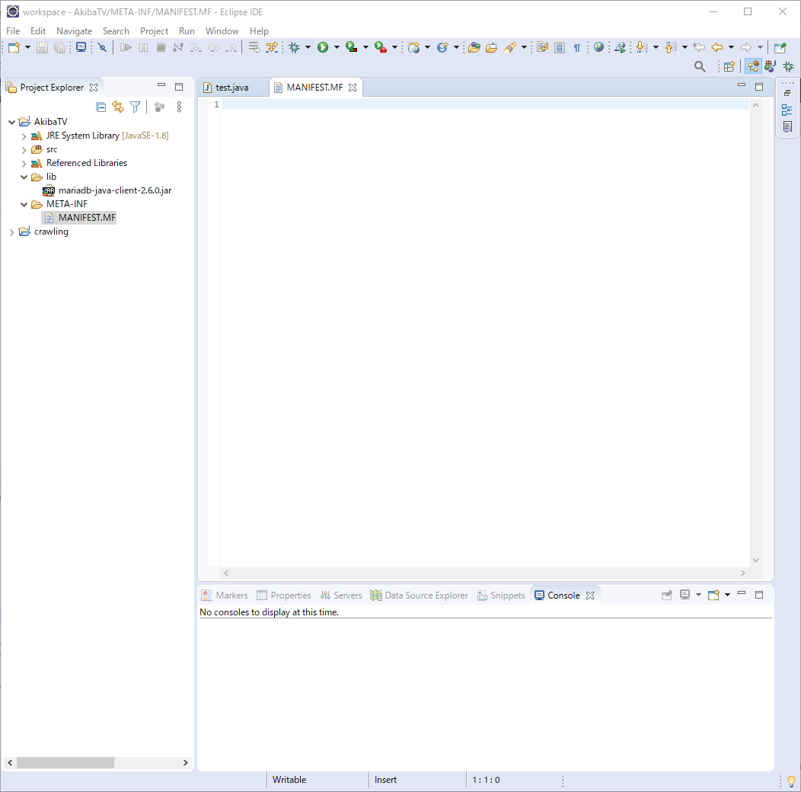

라즈베리파이에서 JAVA에서 만든 JAR파일 실행하기
라즈베리파이에서 JAVA에서 만든 JAR파일 실행하기
안녕하세요. AkibaTV입니다.
이번에 소개할 내용은 라즈베리파이에서 JAVA에서 만든 JAR파일 실행하기 입니다.
자바를 이용해서 배치프로그램을 개발을 하신후 라즈베리파이 또는 리눅스에서
실행을 위해선 JAR파일을 만드시거나 클래스파일을 그대로 올리고 실행을 해주셔야만 합니다.
제가 소개할 내용은 JAR파일을 만든후 실행하기를 해보도록 하겠습니다.
JAVA에서 개발한 프로젝트 JAR파일로 만들기를 아직 안보신분은 참고를 해주시기 바랍니다.
우선 이클립스를 실행후 JAVA에서 개발한 프로젝트 JAR파일로 만들기에 덧붙여서 하겠습니다.

이클립스를 실행을 하시고 기존에 만들어둔 AkibaTV프로젝트를 이용을 하겠습니다.
이상태로 JAR파일을 만드셔서 실행을 하셔도 실행은 되시겠지만
추가 라이브러리가 있을경우에는 추가 라이브러리도 JAR파일에서 인식이 되게끔
추가를 해주실 필요가 있습니다.
우선 META-INF폴더를 추가를 해주시기 바랍니다.
폴더 생성을 선택을 해주시기 바랍니다.
META-INF를 입력후 Finish를 눌러주시기 바랍니다.
META-INF폴더가 생성된것을 확인 하실수 있습니다.
이번에는 META-INF폴더에 MANIFEST.MF파일을 추가를 하겠습니다.

File을 선택을 하시기 바랍니다.
MANIFEST.MF를 입력후 Finish를 눌러주시기 바랍니다.

MANIFEST.MF파일이 생성된것을 확인이 되었습니다.
lib폴더에 외부 mariadb-java-client-2.6.0.jar를 MANIFEST.MF파일에 추가를 해주도록 하겠습니다.
아래와 같이 입력을 해주시기 바랍니다.
1 | Manifest-Version: 0.1 |
이제 이상태로 JAR파일을 만들어 주시기 바랍니다.
위의 화면에 오시면 Use existing manifest from workspace를 선택후
추가하신 MANIFEST.MF를 선택후 Finish를 눌러주시기 바랍니다.
JAR파일이 만들어진것을 확인후 파일을 라즈베리파이의 적당한 폴더에 올려주시기 바랍니다.
JAR파일이 올라간것을 확인되셨으면 권한을 실행권한인 755로 설정을 해주시기 바랍니다.
1 | # 실행 권한을 755로 설정합니다. |
권한이 바뀐것을 확인 하실수 있습니다.
실행을 위해 아래와 같이 명령어를 입력해 주시기 바랍니다.
1 | # 실행 메모리는 프로그램 크기를 생각하셔서 해주시기 바랍니다. |
JAR파일을 실행을 합니다.
JAR파일이 실행되고 Hello, AkibaTV!가 출력이 되신것을 확인 하실수 있습니다.